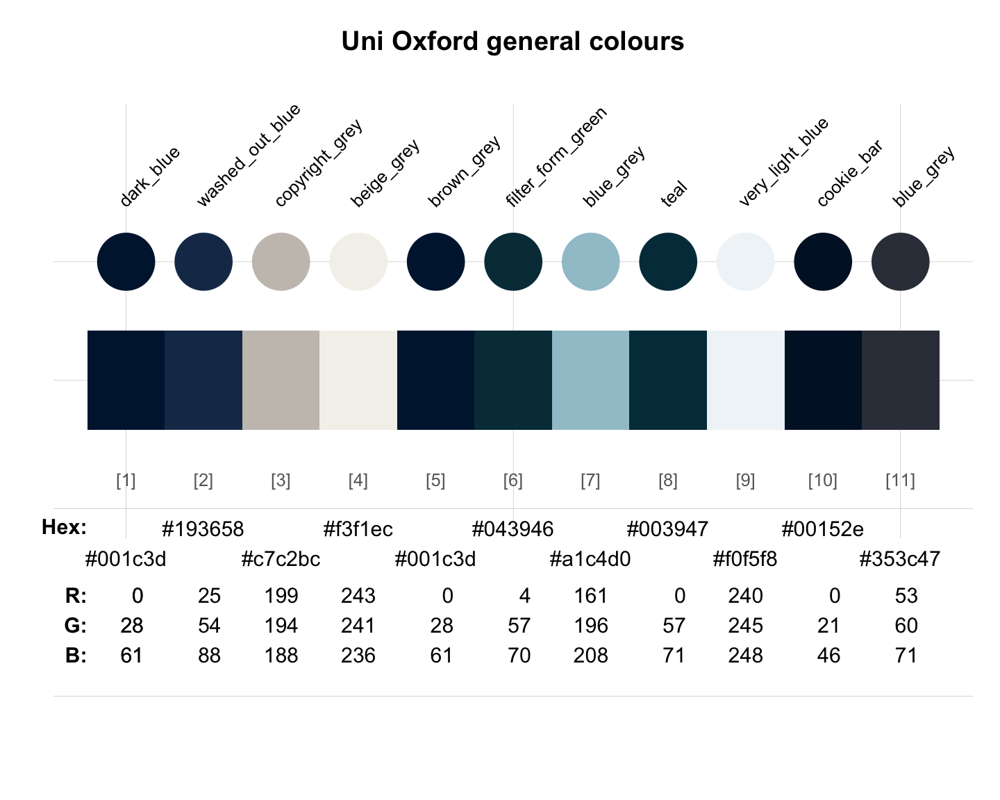

oxford_general provides the general/ secondary colours
of the University of Oxford, England, UK.
Source
Colour definitions are based on the Digital style guide.
Details
The wide secondary palette is used to add visual distinction and texture to design elements as well as signifying page links, call-to-actions (e.g buttons) and active pages in navigational elements.
The colours are
"dark_blue" (defined as HEX #001c3d),
"washed_out_blue" (defined as HEX #193658),
"copyright_grey" (defined as HEX #c7c2bc),
"beige_grey" (defined as HEX #f3f1ec),
"brown_grey" (defined as HEX #001c3d),
"filter_form_green" (defined as HEX #043946),
"blue_grey" (defined as HEX #a1c4d0),
"teal" (defined as HEX #003947),
"very_light_blue" (defined as HEX #f0f5f8),
"cookie_bar" (defined as HEX #00152e), and
"blue_grey" (defined as HEX #353c47).
See also
oxford_brand for the brand colours of University of Oxford;
oxford_link for the link colours of University of Oxford;
oxford_shades for the shade colours of University of Oxford;
oxford_blog for the blog colours of University of Oxford;
oxford_graduate for the graduate colours of University of Oxford;
oxford_error for the error colours of University of Oxford;
oxford_socialmedia for the social media colours of University of Oxford;
seecol for viewing and comparing colour palettes;
usecol for using colour palettes;
simcol for finding similar colours;
newpal for defining new colour palettes;
grepal for finding named colours.
Other English university color palettes:
birmingham,
lancaster_1,
lancaster_2,
oxford_blog,
oxford_brand,
oxford_error,
oxford_graduate,
oxford_link,
oxford_shades,
oxford_socialmedia,
uni_manchester
Examples
oxford_general
#> dark_blue washed_out_blue copyright_grey beige_grey
#> "#001c3d" "#193658" "#c7c2bc" "#f3f1ec"
#> brown_grey filter_form_green blue_grey teal
#> "#001c3d" "#043946" "#a1c4d0" "#003947"
#> very_light_blue cookie_bar blue_grey
#> "#f0f5f8" "#00152e" "#353c47"
unikn::seecol(oxford_general, main = "Uni Oxford general colours") # view colour palette
